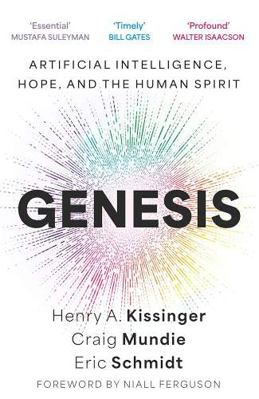

Genesis by Henry A. Kissinger, Craig Mundie, and Eric Schmidt explores the transformative potential of artificial intelligence (AI) and its profound impact on human knowledge, identity, and global systems. The book combines historical, technological, and philosophical perspectives to address the challenges and opportunities presented by AI.
जेनेसिस, हेनरी ए. किसिंजर, क्रेग मुंडी, और एरिक श्मिट द्वारा लिखित, कृत्रिम बुद्धिमत्ता (एआई) की परिवर्तनकारी क्षमता और मानव ज्ञान, पहचान, और वैश्विक प्रणालियों पर इसके गहरे प्रभाव की पड़ताल करती है। यह पुस्तक एआई द्वारा प्रस्तुत चुनौतियों और अवसरों को संबोधित करने के लिए ऐतिहासिक, तकनीकी, और दार्शनिक दृष्टिकोणों को जोड़ती है।
AI challenges traditional methods of validating knowledge and reshapes how we perceive reality, offering unprecedented insights and capabilities.
एआई पारंपरिक ज्ञान सत्यापन विधियों को चुनौती देता है और वास्तविकता को समझने के हमारे तरीके को नया रूप देता है, अभूतपूर्व अंतर्दृष्टि और क्षमताएं प्रदान करता है।
The authors emphasize the importance of embedding human values and dignity into AI systems to ensure ethical development and use.
लेखक एआई प्रणालियों में मानव मूल्यों और गरिमा को शामिल करने के महत्व पर जोर देते हैं ताकि नैतिक विकास और उपयोग सुनिश्चित हो सके।
AI has the potential to address global challenges like climate change and inequality, but it also raises concerns about autonomy and decision-making.
एआई में जलवायु परिवर्तन और असमानता जैसी वैश्विक चुनौतियों का समाधान करने की क्षमता है, लेकिन यह स्वायत्तता और निर्णय लेने के बारे में चिंताएं भी उठाता है।
The book explores AI's impact on international relations, security, and economic systems, calling for global cooperation to manage its influence.
यह पुस्तक अंतरराष्ट्रीय संबंधों, सुरक्षा, और आर्थिक प्रणालियों पर एआई के प्रभाव की पड़ताल करती है और इसके प्रभाव को प्रबंधित करने के लिए वैश्विक सहयोग का आह्वान करती है।
The authors propose a roadmap for integrating AI into society in ways that enhance human potential while mitigating risks.
लेखक एआई को समाज में इस तरह से एकीकृत करने के लिए एक रोडमैप का प्रस्ताव करते हैं जो मानव क्षमता को बढ़ाता है और जोखिमों को कम करता है।
Genesis provides a thought-provoking exploration of AI's transformative power and its implications for humanity, urging us to approach its development with responsibility and foresight.
जेनेसिस एआई की परिवर्तनकारी शक्ति और मानवता के लिए इसके प्रभावों की एक विचारोत्तेजक खोज प्रदान करती है, और हमें इसके विकास के प्रति जिम्मेदारी और दूरदर्शिता के साथ दृष्टिकोण अपनाने का आग्रह करती है।